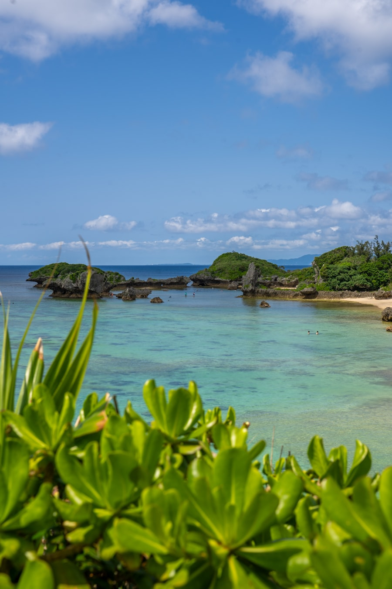

오키나와 · 나하
오키나와 (나하)
국제거리를 중심으로 한 시내 여행 정보.
이 지역 스팟 둘러보기
소지역과 카테고리를 선택하면 실제로 가볼 만한 곳/먹을 곳이 바로 아래에 나옵니다.
🍽️ 나하 국제거리
-
이츠데모 아사고한(いつでも朝ごはん)
"언제나 아침밥"이라는 뜻. 오전 7시 오픈, 유시두부 소바(950엔) 등 오키나와식 아침식사. 산핀차·녹차 셀프 무제한 제공.
-
oHacorte Bakery
국제거리에서 도보로 이동 가능한 베이커리, 프렌치토스트가 인기 메뉴.
-
카페 플렌타
국제거리 내 수플레 팬케이크로 인기 있는 카페.
-
아메리칸 스타일 카페 (정확한 상호명 확인 필요)
미국인 오너 운영, 에그 베네딕트·팬케이크 등 미국식 아침 메뉴. 정식 상호명은 추가 확인이 필요합니다.
조건에 맞는 스팟이 아직 없습니다. 다른 필터를 선택해 보세요.